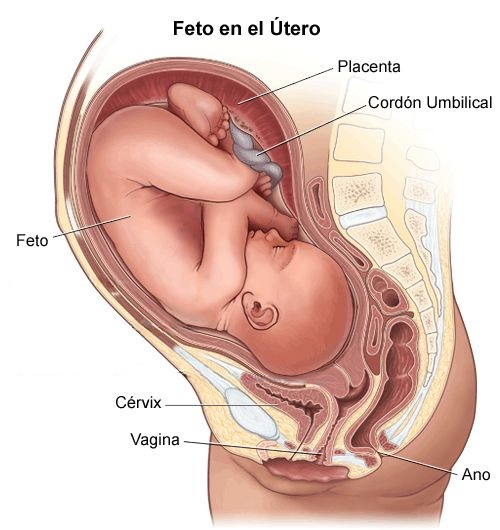

Descripción
El embarazo es el proceso mediante el cual una mujer lleva un embrión o feto dentro de su útero. Este proceso dura aproximadamente 40 semanas, desde la concepción hasta el nacimiento, y se divide en tres trimestres. El embarazo implica cambios físicos, hormonales y emocionales significativos.
Causas
El embarazo ocurre cuando un espermatozoide fertiliza un óvulo, que luego se implanta en el útero. Este proceso es posible gracias a la ovulación, que generalmente ocurre una vez al mes. Otros factores que influyen incluyen la salud reproductiva, la edad de la mujer, y su estilo de vida. El uso de métodos anticonceptivos puede prevenir el embarazo.
Síntomas
Los síntomas del embarazo pueden variar, pero comúnmente incluyen la ausencia de menstruación, náuseas matutinas, sensibilidad en los senos, fatiga, cambios en el apetito, aumento de peso y cambios emocionales. A medida que avanza el embarazo, pueden aparecer otros síntomas como hinchazón, dolor de espalda y contracciones.
| Síntomas | Descripción | Frecuencia |
|---|---|---|
| Náuseas matutinas | Sensación de náuseas, especialmente en las primeras horas del día. Común en el primer trimestre. | Alta |
| Fatiga | Cansancio extremo, especialmente durante el primer y tercer trimestre. | Muy alta |
| Sensibilidad en los senos | Aumento en la sensibilidad y dolor en los senos debido a cambios hormonales. | Alta |
| Aumento de peso | Incremento gradual del peso corporal durante todo el embarazo. | Muy alta |
| Hinchazón | Acumulación de líquidos que causa hinchazón en pies y manos, sobre todo en el tercer trimestre. | Media |
Pruebas y exámenes
El embarazo se diagnostica mediante pruebas de embarazo, que detectan la hormona gonadotropina coriónica humana (hCG) en la sangre o la orina. Las ecografías también se utilizan para confirmar el embarazo, determinar la edad gestacional y monitorear el desarrollo del feto. Los exámenes prenatales son fundamentales para asegurar la salud de la madre y el bebé.
Tratamiento
El tratamiento durante el embarazo incluye cuidados prenatales regulares para monitorear la salud tanto de la madre como del bebé. Esto incluye la suplementación con ácido fólico, la realización de ecografías y análisis de sangre, y la adopción de un estilo de vida saludable, con una dieta equilibrada, ejercicio moderado y la evitación de sustancias perjudiciales como el alcohol y el tabaco.
Expectativas
El embarazo generalmente culmina en el nacimiento de un bebé sano tras aproximadamente 40 semanas de gestación. Con atención médica adecuada, muchas mujeres experimentan un embarazo saludable y sin complicaciones. Es importante seguir las recomendaciones médicas y realizar todas las visitas prenatales para garantizar un buen resultado tanto para la madre como para el bebé.
Para más detalle pulsa en la zona sobre la que quieres saber más sobre el embarazo y enfermedades de dichas zonas
